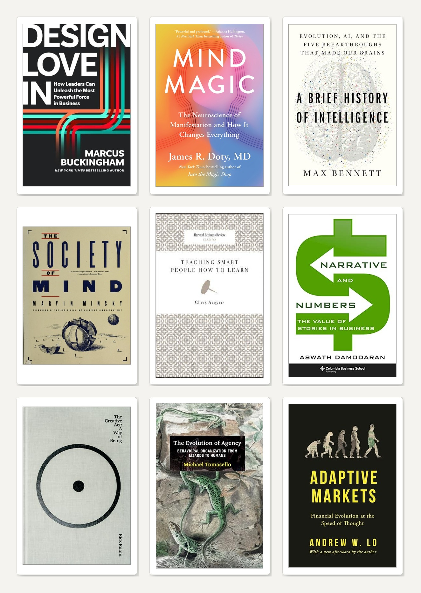
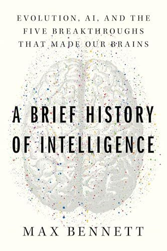
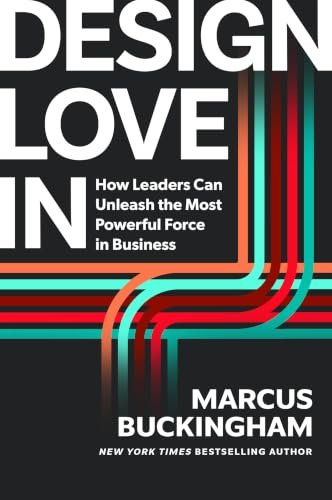
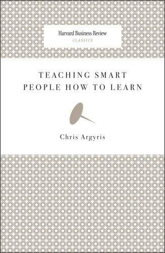
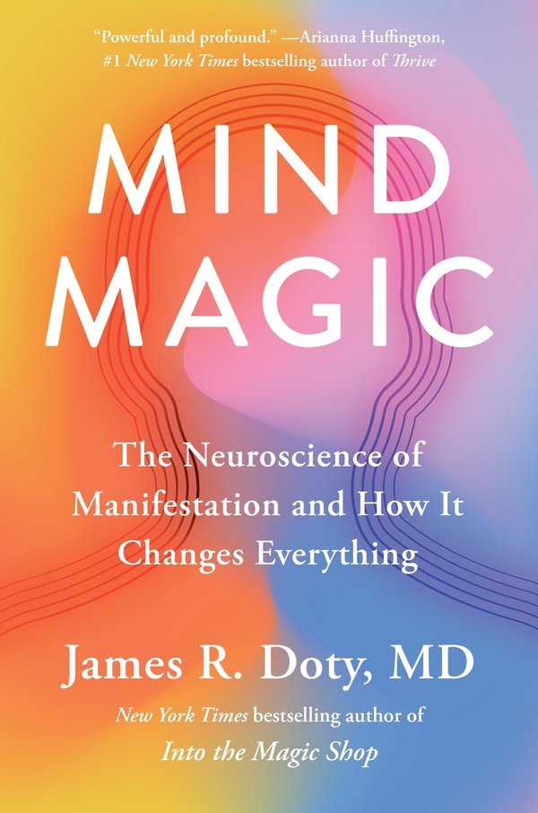
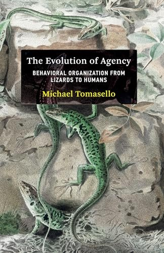
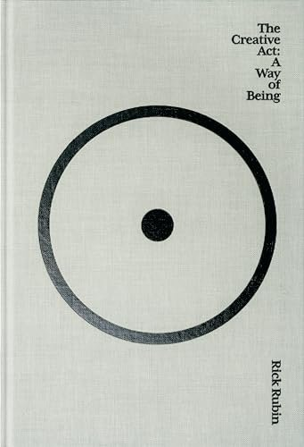
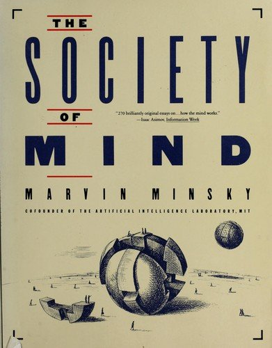
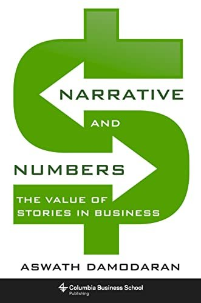
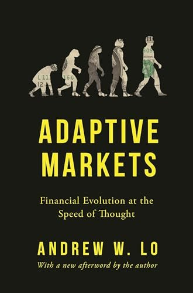

Meus 9 Melhores Livros de 2026 (até agora)
2026-09-16

Eu leio de forma muito errática. Alguns livros chegam e são lidos por completo em poucos dias. Outros eu leio um pequeno trecho e deixo descansando por muito tempo antes de terminar. Alguns valem apenas o resumo. E, claro, alguns ficam intactos e nunca são tocados.
Você vai perceber que esta lista tem tanto livros novos quanto livros de décadas atrás. Eu não ligo muito para ler só os lançamentos mais recentes. Às vezes, um livro antigo vira uma boa leitura, seja pelo meu contexto atual, seja por pura curiosidade.
Os livros que ficaram comigo neste ano giravam em torno da mesma lacuna. A distância entre como achamos que operamos e como de fato operamos. Até agora, estes são os que têm sido muito valiosos e aplicáveis para mim em 2026.
1. A Brief History of Intelligence

Max Bennett, 2023.
A linguagem é a interface do nosso mundo mental.
Bennett percorre quatro bilhões de anos de evolução do cérebro e resume tudo em cinco movimentos. Cinco saltos, cada um empilhado sobre o anterior.
Direcionar: ir em direção ao bom, longe do ruim. Reforçar: aprender com o que você de fato fez. Simular: rodar a jogada na cabeça antes de executá-la de verdade. Mentalizar: aprender com o que os outros fazem, lendo a intenção por trás do gesto.
E então o quinto, e é aqui que o jogo vira. Linguagem. A mágica dela nunca foi coordenar ou dar ordens. A mágica foi que uma ideia pôde saltar de uma cabeça, pousar em outra e sobreviver à morte de quem a teve primeiro. Bennett chama a gente de "os macacos de cérebro-colmeia".
Esse único movimento é a razão de os humanos comandarem o planeta e os chimpanzés não. Um chimpanzé recomeça perto do zero a cada geração. Você acordou hoje apoiado em dez mil anos de pensamento de outras pessoas, entregue a você em palavras.
Então entre na sua próxima reunião e olhe para ela de novo. Aquela sala cheia de gente conversando é o quinto salto acontecendo ao vivo. É a máquina que move ideias entre pessoas e as faz se acumular. Trate a conversa como o trabalho, porque, no sentido mais profundo, ela é o trabalho.
2. Design Love In

Marcus Buckingham, 2025.
O amor é o motor da prática deliberada, a força primária do esforço voluntário.
Buckingham abre seu livro mais recente chorando às 3 da manhã, revivendo o dia em que vendeu a própria empresa e destruiu algo que havia construído com amor.
Então ele solta uma afirmação que soa fofa e é tudo menos isso: "O amor é a força mais poderosa nos negócios." A mais poderosa. E ele traz as provas.
A lógica é uma corrente que você consegue gerenciar. Experiências geram comportamentos, e comportamentos geram resultados. Então, quando os números não vêm, pare de encarar os números. Volte pela corrente até as experiências que as suas pessoas de fato vivem, terça-feira às 14h, não no slide de valores.
Amor, na definição dele, é o punhado de sentimentos que fazem alguém se engajar, praticar por conta própria e defender você quando você não está na sala. Você pode desenhar para isso. Você pode até medir.
É um remédio amargo para uma cultura de dashboard. A experiência sentida é o indicador que antecipa. O dashboard só conta o que já aconteceu. Lidere pela frente da corrente.
3. Teaching Smart People How to Learn

Chris Argyris, 1991.
Ao presumir que elas não conseguem aprender, nos isentamos de ter que aprender também.
Aqui vai uma verdade que ninguém quer ouvir no topo do organograma. As suas pessoas mais inteligentes muitas vezes são as que menos aprendem.
Veja o que acontece no instante em que um destaque bate de frente com o fracasso de verdade. Ela explica. Ela desconversa. Ela joga o foco para todo mundo, menos para si. E o aprendizado para na hora.
Argyris nomeia os dois modos. O aprendizado de circuito simples corrige o erro. O de circuito duplo questiona se o objetivo estava errado desde o começo. As suas melhores pessoas são cirurgiãs no primeiro e iniciantes no segundo, porque o sucesso nunca as obrigou a praticar o segundo.
A frase que ficou martelando na minha cabeça por meses: "a capacidade de aprender delas trava exatamente no momento em que elas mais precisam dela."
Então pare de torcer para um novo plano de bônus resolver isso. Não vai. Isso mora na forma como as pessoas raciocinam sob ameaça, e só muda quando a pessoa mais sênior da sala vai primeiro e destrincha o próprio raciocínio em voz alta. Todo mundo está observando para ver se é seguro. Mostre que é.
4. Mind Magic

James Doty, 2024.
O que o subconsciente procura, a mente consciente encontra.
Um neurocirurgião escreveu um livro sobre manifestação. Eu quase pulei. Não pule.
Por baixo da aura mística, Doty está falando de atenção. O que você marca como importante, o seu cérebro sai caçando, o dia inteiro, esteja você pensando nisso conscientemente ou não.
Agora aplique isso na sua estratégia. Você pode escrever a meta mais elegante do mundo. Se a sua equipe consegue recitar, mas nunca sente e nunca repete, o cérebro dela arquiva aquilo como ruído e segue em frente. O cérebro é econômico. Ele ignora o que é desconhecido para poupar energia.
Duas coisas passam pelo filtro. Emoção e repetição. Nas palavras dele: "não é só a repetição que forma um hábito; é a emoção positiva que ligamos a fazer um bom trabalho e concluí-lo."
E o detalhe que a maioria dos líderes não percebe. Metas apontadas para outras pessoas grudam mais do que metas apontadas para você mesmo. As pessoas sentem a diferença, e aparecem por aquilo que conseguem sentir.
Para onde vai a atenção, vai a energia. Então a pergunta de verdade é quem está escolhendo a atenção da sua equipe nesta semana. Você, ou a agenda?
5. The Evolution of Agency

Michael Tomasello, 2022.
A questão não é complexidade, é controle.
Peguei este livro por causa de uma palavra que ouço dos líderes o tempo todo. Agência. Eles querem pessoas que agem como donas. Que empurram. Que pegam a bola sem ninguém mandar.
Tomasello transforma esse desejo em algo que você consegue de fato construir. Agência funciona com cinco partes operando juntas: um objetivo real, atenção no que importa, uma decisão genuína, uma ação, e feedback honesto sobre o resultado.
Leia isso como uma especificação de projeto, porque é o que é. Dê a uma pessoa as cinco e a postura de dono aparece sozinha. Tire uma delas, esconda o objetivo, corte a informação, finja a decisão, pule o feedback, e a mesma pessoa se cala. Aí damos de ombros e a chamamos de passiva.
A ideia maior dele é a que a maioria dos líderes ignora. A agência mais forte vive entre as pessoas, não dentro delas. Duas pessoas presas ao mesmo objetivo viram um único sistema que se impulsiona sozinho.
Então, da próxima vez que você pedir mais responsabilidade, mire em outro lugar. Você está, na verdade, pedindo um "nós" mais forte. Construa a conexão e a postura de dono vem junto.
6. The Creative Act

Rick Rubin, 2023.
A competição serve ao ego. A cooperação sustenta o melhor resultado.
Rubin produziu alguns dos maiores discos dos últimos quarenta anos, e não toca instrumento nem lê partitura. O livro dele é sobre como isso é possível, e acaba sendo um livro sobre atenção.
A afirmação dele: "o verdadeiro trabalho do artista é um modo de estar no mundo." A música, o slide, o produto, isso é só o que cai no final. Treine a atenção e o resultado se resolve.
Para equipes, uma ideia já paga o livro inteiro. Morre mais trabalho por julgamento precoce do que por falta de talento. Alguém joga uma ideia crua, a sala pisa nela antes que ela crie pernas, e você acabou de ensinar todo mundo a parar de jogar ideias.
Mais duas que entram direto numa empresa. Competição alimenta o ego, cooperação alimenta o resultado. E, ao dar feedback, mire no trabalho, nunca na pessoa, porque no segundo em que vira pessoal, ela para de ouvir e começa a se defender.
Proteja a semente. Isso é a maior parte do trabalho.
7. The Society of Mind

Marvin Minsky, 1986.
O poder da inteligência vem da nossa vasta diversidade, não de um único princípio perfeito.
O livro mais antigo da minha lista, e de algum modo o mais atual no ano em que todo mundo está pirando com IA.
A grande tacada de Minsky: não existe uma única coisa inteligente dentro da sua cabeça. A sua mente é um monte de partes pequenas e burras, e inteligência é apenas como elas se conectam.
Sente com o que isso faz na forma de enxergar uma equipe. Você nunca vai prever o que um grupo produz somando o talento dos indivíduos. O resultado vive nas conexões. Nas palavras de Minsky, você precisa saber "quem fala com quem."
Depois vem o princípio de Papert, que já vale o preço do livro para qualquer gestor. A maior parte do crescimento não exige novas habilidades. Exige um jeito melhor de usar as habilidades que já estão na sala. A criança de cinco anos já tem todas as peças para resolver o problema. O que falta é um gerente do meio, dentro da mente, para decidir em qual peça confiar.
Então, antes de abrir aquela vaga para a habilidade que falta, faça a pergunta mais barata. A habilidade está faltando, ou só está mal conectada?
8. Narrative and Numbers

Aswath Damodaran, 2017.
Investir bem em empresas jovens vem de acertar a narrativa, não os números.
Um professor de valuation escreveu um dos melhores livros sobre contar histórias que eu já li. Essa é a piada, e é também a lição inteira.
O enquadramento dele: "histórias sem números são só contos de fada, e números sem histórias que os sustentem são exercícios de modelagem financeira." A maioria dos líderes escolhe um lado e despreza o outro em silêncio. Os contadores de história abanam a mão para a planilha. O pessoal de finanças revira os olhos para a narrativa. Os dois entram no jogo pela metade.
Damodaran amarra os dois com uma regra. Todo número do seu plano volta para uma frase da sua história, e toda frase aparece em algum lugar como número. Se uma afirmação sobre a sua cultura ou a sua estratégia não vira número, seja honesto consigo mesmo, é enfeite.
E a frase que deveria tirar o sono de qualquer executivo: se você não conta uma história crível sobre a sua empresa, o mercado escreve uma por você. Aí você passa os trimestres reagindo ao enredo dos outros.
Mais uma que ele aprendeu na marra, e colocou os próprios piores erros no livro para provar. Recusar-se a atualizar a sua narrativa só porque ela é sua não é lealdade. É ego.
9. Adaptive Markets

Andrew Lo, 2017.
Não somos um sistema com bugs; somos um sistema de bugs.
Lo estuda mercados, mas o livro é, na verdade, sobre como as pessoas se comportam sob pressão.
Ele aposenta uma palavra da qual abusamos. Quando alguém age mal, chamamos de irracional. Lo diz que a palavra honesta costuma ser mal-adaptado. O comportamento funcionava em algum lugar, em algum ambiente. Só não funciona aqui.
Uma troca pequena, uma consequência enorme para um líder. Você para de tentar consertar a pessoa e começa a mudar o ambiente que segue produzindo o comportamento. A versão sem rodeios de Lo: "é o ambiente, idiota." Incentivos, feedback e o que você escolhe medir movem as pessoas. Discursos não.
Ele também defende a emoção, que a maioria dos gestores trata como ruído. Um paciente que perdeu a capacidade de sentir perdeu, junto, a capacidade de decidir. Sentimento não é o defeito no julgamento. É o mecanismo.
E um aviso para qualquer equipe que, sem perceber, treinou todo mundo para pensar igual. Quando o choque vem, ele vem para todos ao mesmo tempo. A natureza detesta uma aposta não diversificada.
O que os nove têm em comum
Coloque os nove lado a lado e todos apontam para a mesma porta. O trabalho de verdade de liderar acontece um andar abaixo daquilo que discutimos nas reuniões.
Raciocínio, com Argyris. Atenção, com Doty e Rubin. Sentimento, com Buckingham. Fiação, com Minsky. Linguagem, com Bennett. Arquitetura, com Tomasello. História, com Damodaran. Ambiente, com Lo.
E a maioria deles te empurra na mesma direção. Pare de tentar consertar a pessoa na sua frente. Mude o que a cerca, e veja a pessoa mudar.
Metade destes livros saiu nos últimos dois anos. Metade é mais velha do que algumas das pessoas com quem trabalho. Os antigos não soaram datados. Soaram adiantados.
Então é isto que fico remoendo, e passo para você. Olhe para o problema que está devorando a sua semana agora. Ele é mesmo um problema de pessoa? Ou você vem chamando de problema de pessoa porque é mais fácil do que mudar o que está em volta dela?
Compartilho novos artigos e ideias no LinkedIn.